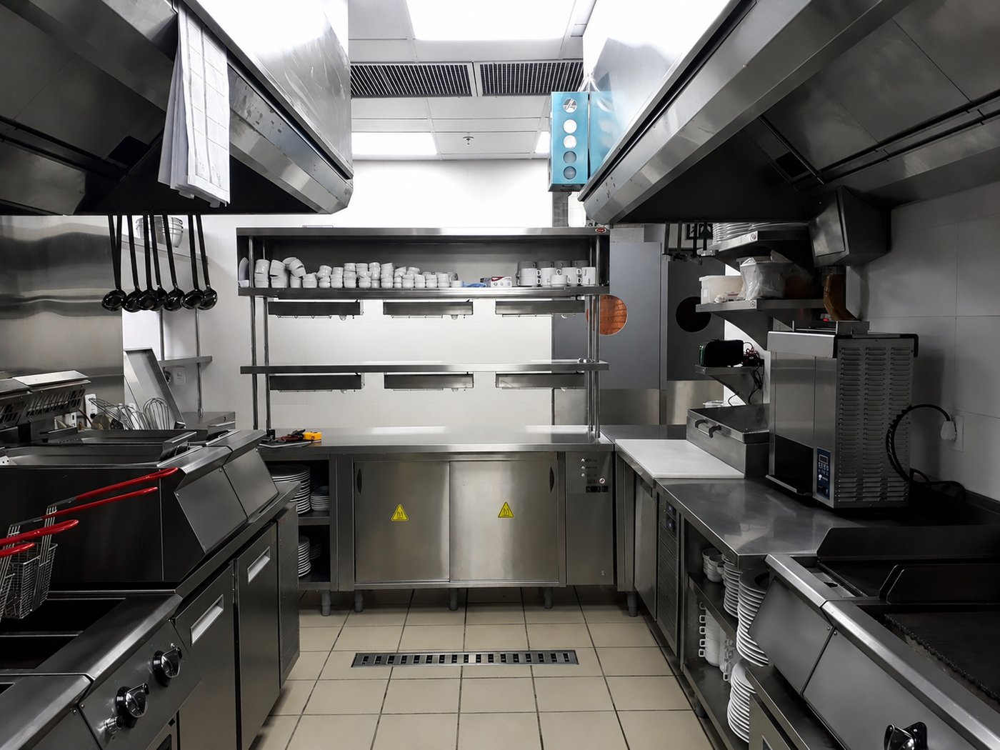

A cozinha certa
transforma toda
a operação.
Não entregamos apenas equipamentos. Entregamos operações que produzem mais, times que trabalham melhor e resultado que você mede todo mês. 18 anos e mais de 3.000 cozinhas transformadas no Brasil falam por si.



Quem compra equipamento compra metal. Quem escolhe a BIANCHINI compra uma operação que produz resultado todos os dias.
A Bianchini Kitchen Pro não é uma mera revendedora de equipamentos. Somos o parceiro que há 18 anos atua ao lado das maiores operações de alimentação do Brasil, transformando todo esse conhecimento prático em cozinhas mais eficientes, seguras e lucrativas — entregando essa diferença, projeto a projeto.
Do mobiliário em inox à cocção, da refrigeração ao bar, da distribuição em buffet à tecnologia — cada componente foi projetado para fazer a sua operação produzir mais, gastar menos e passar em qualquer vistoria na primeira tentativa. Junto com cada projeto, entregamos também as plantas técnicas complementares de pontos: elétrica, hidráulica, gás e esgoto — porque uma cozinha só funciona quando tudo está preparado para receber os equipamentos certos. Porque uma cozinha Bianchini não é obra. É resultado entregue.
Veja o que entregamosCada solução,
um resultado a mais.
Cada linha foi projetada com um objetivo: fazer a sua cozinha produzir mais, desperdiçar menos e gerar resultado todos os dias. Escolha o segmento e descubra o que a Bianchini entrega.
Uma cozinha organizada não é detalhe. É o que separa uma equipe que produz de uma que improvisa.
O mobiliário Bianchini é projetado para o ritmo real da sua operação — cada bancada, cada estante, cada cuba posicionada onde precisa estar para o fluxo funcionar sem atrito. Mais organização, menos retrabalho, mais produção por turno. ExplorarFogo no ponto certo, no tempo certo — é assim que uma cozinha gera lucro consistente.
A linha de cocção Bianchini foi dimensionada para quem não pode parar. Alto rendimento, uniformidade de temperatura e durabilidade que resiste ao uso intenso de segunda a domingo. Cozinhas que produzem mais, sem aumentar o time nem o custo de energia. ExplorarDesperdício zero começa na câmara fria. Controle de temperatura é controle de custo.
Cada grau importa. A linha de refrigeração Bianchini mantém a cadeia fria intacta — do recebimento ao preparo — com equipamentos dimensionados para o volume real da sua operação. Menos perda, mais aproveitamento, operação dentro da norma sanitária. ExplorarUm bar bem estruturado transforma bebida em experiência — e experiência em ticket médio.
A estrutura de bar Bianchini foi pensada para o serviço fluir: tudo no lugar certo, na altura certa, sem improvisar. Quando o bar funciona, o consumo aumenta e o cliente fica mais tempo. Resultado que aparece no caixa no mesmo dia. ExplorarO cliente come primeiro com os olhos. Uma linha de distribuição Bianchini transforma isso em venda.
Buffets que mantêm a temperatura ideal, apresentam o alimento com elegância e permitem o serviço sem congestionamento. Cada detalhe projetado para valorizar o que está sendo servido e acelerar o fluxo do cliente. ExplorarCada movimento desnecessário dentro da cozinha é tempo perdido. E tempo, na operação, é dinheiro.
A linha de transporte Bianchini elimina o improviso entre estações — da produção à distribuição. Fluxo organizado, menos esforço da equipe, mais velocidade no serviço. O tipo de eficiência que só aparece quando tudo está no lugar certo. ExplorarTecnologia nas Cozinhas 4.0 não é luxo. É o que permite produzir mais, com menos gente, com consistência todos os dias.
Fornos que memorizam receitas, lavadoras que reduzem o ciclo, equipamentos que trabalham enquanto sua equipe faz o que só humanos fazem. Resultado mensurável desde a primeira semana de operação. ExplorarSem exaustão eficiente, nenhuma cozinha é aprovada. Com a Bianchini, você passa na primeira.
A Bianchini projeta, fornece e instala sistemas de HVAC completos — utilizando equipamentos robustos, dimensionados corretamente, atendendo as Normas da Vigilância sanitária e corpo de bombeiros. Sem surpresa, tudo bem dimensionado para a sua necessidade. ExplorarFornos que reduzem
custo e geram consistência
Até 30% menos energia. Pratos perfeitamente repetíveis em qualquer turno, com qualquer cozinheiro. Controle digital de temperatura, umidade e tempo com precisão de ±1°C — e relatórios de consumo no app. O chef foca no que importa; o forno faz o resto com perfeição.
Cocção que elimina
gargalo e acelera o serviço
Uma linha de cocção mal dimensionada custa caro: atraso no serviço, chef sobrecarregado, cliente insatisfeito. A cocção modular Bianchini resolve isso — módulos combináveis, bancada contínua sem emendas e queimadores de alto rendimento, projetados para o volume exato da sua operação. Sem sobra. Sem gargalo.
Buffets que aumentam
o ticket sem esforço
Um buffet bem projetado aumenta o ticket médio sem você fazer mais nada — o alimento bem exposto, na temperatura certa, com iluminação que desperta desejo, vende sozinho. Do refeitório industrial que precisa girar 1.000 refeições ao café da manhã do hotel cinco estrelas que precisa impressionar.
Do bistrô de bairro à
indústria de grande porte.
Por que os melhores
escolhem a Bianchini.
Há 18 anos dentro das maiores operações de alimentação do Brasil, aprendemos exatamente o que separa uma cozinha que gera lucro de uma que gera problema. Essa diferença, nós entregamos.
Falar com EspecialistaControlamos cada milímetro do que entregamos. Produção sob medida, sem intermediários, com rastreabilidade total — o que significa que o que foi projetado é exatamente o que chega e funciona na sua operação.
AISI 304 e 316 com laudo de origem, soldas sanitárias e acabamento certificado. Equipamento que não enferruja, não para, não gera chamado técnico toda semana — e isso, no longo prazo, é muito dinheiro no seu bolso.
IoT e controles digitais integrados. Temperatura, consumo e produtividade em tempo real no celular do chef ou do gestor. Quando você sabe exatamente o que está gastando, toma a decisão que aumenta a margem.
Projeto executivo, plantas complementares (elétrica, hidráulica, gás e esgoto), fabricação, instalação e comissionamento. Você não gerencia fornecedor nem coordena montagem. A cozinha entra funcionando no primeiro dia — no prazo e no orçamento combinado.
RDC 216 da ANVISA, normas sanitárias estaduais e Corpo de Bombeiros. Nossas cozinhas são aprovadas de primeira — porque cada detalhe do projeto já contempla o que o fiscal vai checar. Sem retrabalho, sem atraso, sem susto.
Clientes relatam até 25% de redução no custo operacional e ganho de produtividade mensurável já no primeiro trimestre. Não é promessa — é o resultado de 18 anos projetando cozinhas para gerar retorno real e mensurável.
Do diagnóstico ao resultado operando.
Mapeamos sua operação: fluxo, volume, custo atual e gargalos reais. Começamos entendendo o resultado que você quer — não empurrando produto.
Especificação técnica completa com plantas de elétrica, hidráulica, gás e esgoto. Compatibilizada com normas sanitárias e o retorno esperado para o seu investimento.
Produção própria ou das melhores marcas, com controle de qualidade e prazo documentados. Você acompanha cada etapa.
Montagem completa, testes e comissionamento. Sua cozinha produzindo resultado no primeiro dia de operação — sem pendências, sem retrabalho.
Cozinhas que provam
a entrega.
A palavra de quem já confiou.
Leonardo Bianchini é um profissional muito qualificado, com conhecimento ímpar em food service. Da concepção do negócio à implantação, atua de forma efetiva, ajudando a transformar sonhos em realidade.
Conheço Leonardo há muitos anos e acompanhei sua trajetória de sucesso em todos os fabricantes de cozinha por onde passou — sempre com excelente desempenho e construindo relações de confiança.
A Bianchini entregou nossa cozinha dentro do prazo e com qualidade acima do esperado. Passamos na vistoria sanitária sem nenhuma pendência — e hoje operamos com muito mais eficiência.
Cada dia com a cozinha
errada é lucro perdido.
Fale agora com um especialista Bianchini e descubra exatamente quanto sua operação pode ganhar com a cozinha certa. 18 anos e 3.000+ transformações comprovam: o resultado começa no projeto.